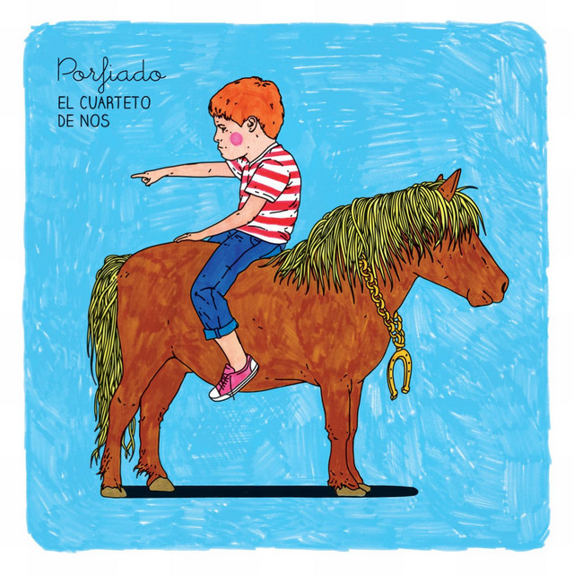

CUARTETO DE NOS
No se que tan bueno o malo o raro ajaja sea que me identifico más con canciones de señores de la tercera edad jsjs pero su satira, temas en general me mamán.


Me define con mucha gente y joya de instrumental, ademas de que amo el concepto de un chivo expiatorio
Mi favorita
CHIVO EXPIATORIO

Nmms bendito dia que escuche esta joya.
Ademas de que simpatizo con la letra
Ademas de que simpatizo con la letra
Primera que escuche
NO QUIERO SER NORMAL

Joya de critica a la sociedad actual consumista.
Mejor satira
MARIO NETA

Describe lo obsecionado que estoy con mis metas, esa sed y deceo de lograr mas
Me motiva
INSACIABLE

Ese sentimiento de soledad por personalidad y autojuzgarse, ufff si soy
Me llega
HABLA TU ESPEJO